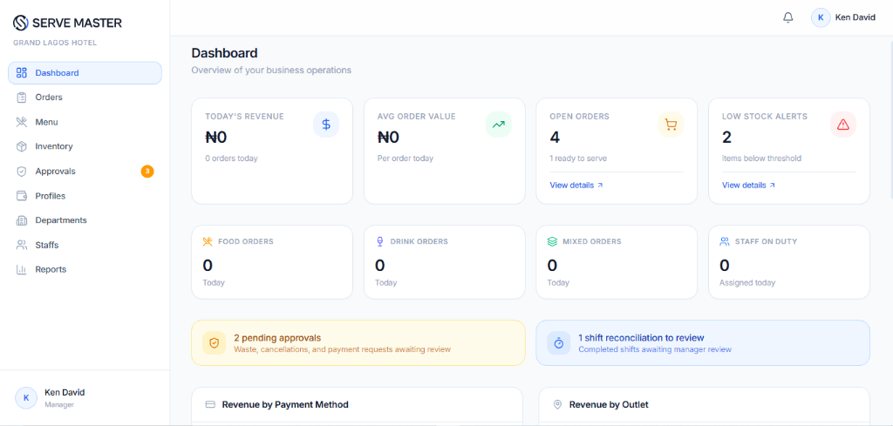
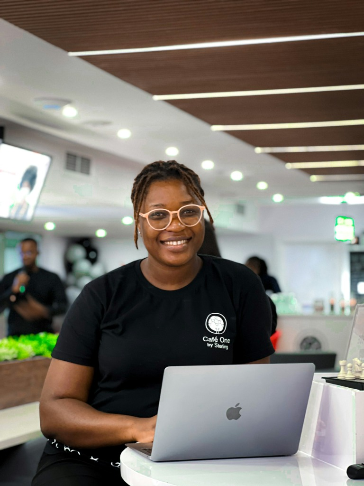
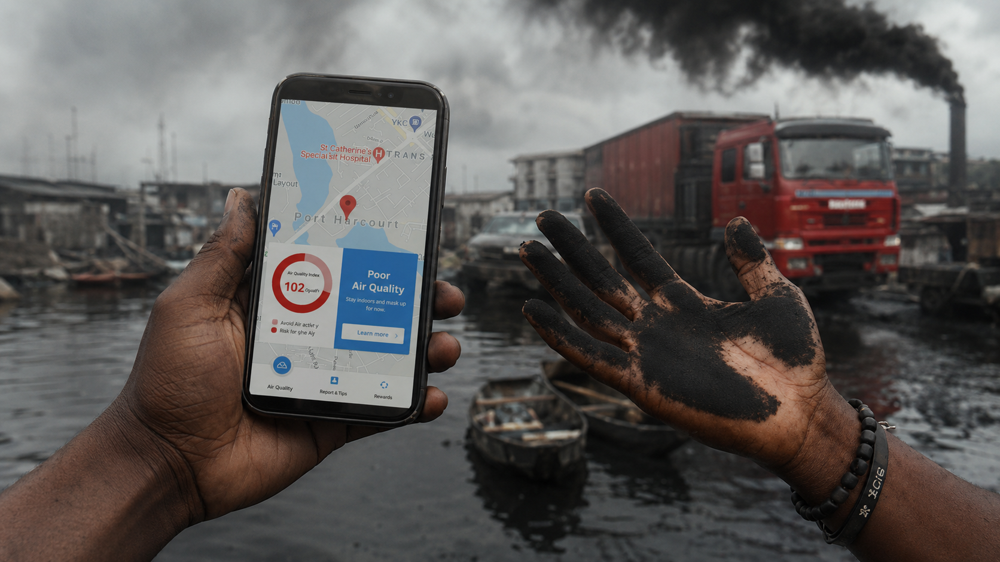
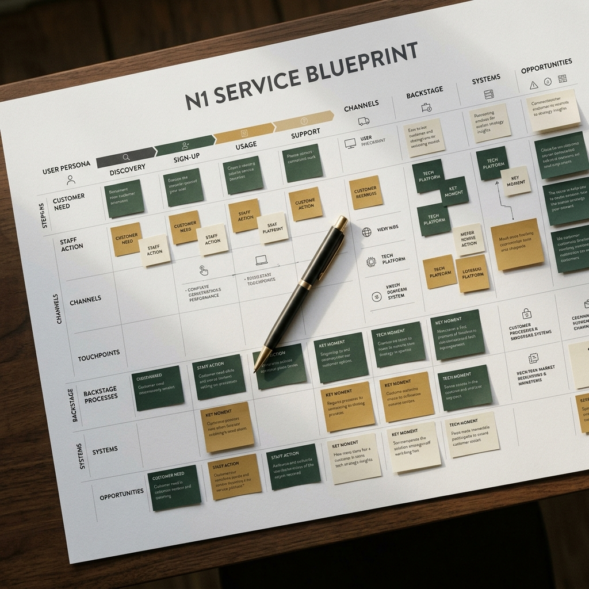

Service Design & Strategic Marketing
ServeMaster
End-to-end service design for the F&B department in the Hospitality Industry, mapping operational workflows to go-to-market strategy for seamless execution.
View Case StudySelected Works

Service Design & Strategic Marketing
End-to-end service design for the F&B department in the Hospitality Industry, mapping operational workflows to go-to-market strategy for seamless execution.
View Case StudyProduct Strategy Research
Deep-dive strategic research mapping user behaviors, opportunity gaps, and competitive positioning to inform structural product direction and reduce decision friction.
View Case Study

UX Research & Product Design
A research-led environmental platform architecture designed to align community behavior with accessible pollution tracking and actionable health guidelines.
View Case StudyContent Strategy
A systemic content architecture designed to bridge the gap between product capabilities and user understanding, establishing long-term market positioning.
View Case StudyMarket Niche Research
Structured market intelligence gathering and synthesis to uncover viable operational opportunities and mitigate structural risks across complex educational ecosystems.
View Case Study
Strategic Service Design
A comprehensive mapping of internal operations and external touchpoints, isolating systemic bottlenecks to construct a more resilient service delivery model.
View Case StudyHave a project in mind? I bring strategic research and service design into your next initiative. Let's have a conversation about what's possible.
Start a Conversation